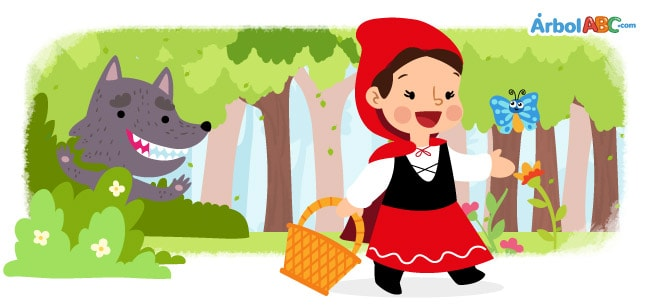

.: Happy Book :.
Little Red Riding Hood
Once upon a time there was a little girl who wore a beautiful red cloak. Her mother, who knew how to sew very well, had made it for her. The girl wore it so often that everyone called her Little Red Riding Hood.
One day, Little Red Riding Hood's mother called her and said, “Grandmother does not feel very well. I have baked some cookies and I want you to take them to her.”
“Of course,” said Little Red Riding Hood, putting on her cloak and filling her basket with the freshly baked cookies.
Before leaving, her mother told her, “Listen to me very well. Stay on the road and never talk to strangers.”
“I know mother,” said Little Red Riding Hood and left immediately to Grandma's house.
To get to Grandma's house, Little Red Riding Hood had to cross a path through the thick forest. On the way, she met a wolf
“Hello little girl. Where are you heading to on this wonderful day?” the wolf asked
Little Red Riding Hood remembered that her mother told her not to talk to strangers, but the wolf looked very elegant, and he was very friendly and polite.
“I'm going to Grandma's house,” the girl replied. “She is sick and I'm going to take her these cookies.”
“What a good girl you are!” exclaimed the wolf. “How far do you have to go?”
“Oh! Grandma lives at the end of the road,” answered Little Red Riding Hood with a smile.
“I wish you a very happy day, little girl,” the wolf replied.
The wolf went into the forest. He had a huge appetite and was not as nice as he appeared. He ran to Grandma's house before Little Red Riding Hood could arrive. His plan was to eat grandma, Little Red Riding Hood and all the freshly baked cookies.
The wolf knocked on Grandma's door. Upon seeing him, Grandma ran away terrified, leaving behind her shawl. The wolf took the old woman's shawl and then put on her glasses and night cap. Quickly, he climbed into Grandma’s bed, covering his nose with the blanket. Soon he heard a knock on the door:
“Grandma, it's me, Little Red Riding Hood.”
Disguising his voice to sound like Grandma, the wolf said, “Please, enter my dear girl. I am in bed.”
Little Red Riding Hood thought that her grandmother was very sick because she looked very pale and sounded terrible.
“Oh, dear grandma, what big eyes you have!” she said.
“All the better to see you with” replied the wolf.
“Oh, dear grandma, what big ears you have!” said Little Red Riding Hood.
“All the better to hear you with, my dear!” the wolf whispered.
“Oh, dear grandma, what big teeth you have!” said Little Red Riding Hood.
“All the better to eat you with!” growled the wolf.
With these words, the evil wolf threw off the blanket and jumped out of bed. Scared, Little Red Riding Hood ran to the door. Just then, a woodcutter, noticing the door was open rushed inside. Grandma was hiding behind him.
At the sight of the woodcutter, the wolf jumped out the window and fled in horror never to be seen again.
Grandma and Little Red Riding Hood thanked the woodcutter for saving them from the wolf and everyone ate cookies and milk. That day Little Red Riding Hood learned an important lesson: You should never talk to strangers.